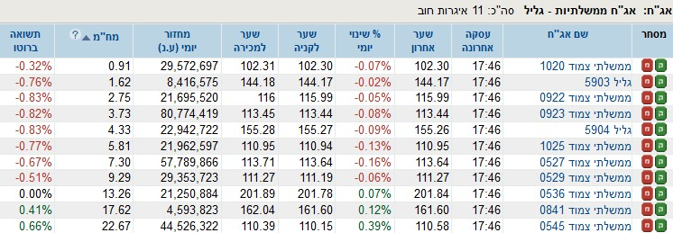

פורסם בתאריך 5.12.2019
התכנים בפוסט זה, כמו כל שאר התכנים בבלוג, הינם תכנים לימודיים במהותם, הם אינם מהווים ייעוץ או המלצה לביצוע פעולה בנייר ערך, ואין לראות בהם תחליף לייעוץ השקעות ו/או ייעוץ פנסיוני המתחשב בצרכיו הייחודיים של כל אדם.
בנק לאומי השיק לפני כשנה את Videa, פלטפורמה דיגיטלית שמטרתה להפוך את ניהול ההשקעות לפשוט ושקוף. על פניו זה נשמע מצוין, והיום נתקלתי בפרסומת שלהם עם שאלון קצר שמאפשר לעונים עליו לבנות תיק השקעות אופטימלי באופן אוטומטי. סקפטי שכמותי, בחרתי לבחון את העניין, והפוסט הזה יציג את התיק שנבנה עבורי, ואת כל הטעויות שזיהיתי בו. הפוסט הוא דעתי האישית בלבד, ואינו מהווה המלצה בעד או נגד השימוש ב-Videa או כל המלצה אחרת. כדרכי בקודש, אגבה את טענותיי בנתונים סטטיסטיים היסטוריים, ואשאיר לקוראים להחליט בעצמם אם כדאי להם להשקיע באמצעות הפלטפורמה, באמצעות חשבון מנוהל מסוג אחר, או באופן עצמאי.
פתחתי את השאלון הקצר, ועניתי על 8 השאלות שהוצגו בו. מראש כיוונתי לענות על כל השאלות באופן שישקף את סוג ההשקעה שמתאימה לי ולמשקיעים רבים – השקעה לטווח ארוך ללא חשש מתנודתיות ובסיבולת סיכון גבוהה. כאשר מכירים את הנתונים ההיסטוריים כפי שאני ותלמידיי מכירים, וכאשר אין צורך בכסף לטווח זמן קצר-בינוני, אפשר לחיות בשלום עם תנודתיות השוק.
השאלון
1. "מה גילך?" 36.
2. "כמה כסף חשבת להשקיע?" 300,000 ₪ (לצורך הדוגמא בלבד).
3. "בעוד כמה שנים להערכתך, יהיה לך צורך להשתמש בכספי ההשקעה?" עניתי מעל 15 שנה, האפשרות הארוכה ביותר שהוצגה לשאלה זו.
4. "מהי המטרה העיקרית של ההשקעה שלך"? עניתי שכרגע אין לי מטרה מוגדרת, כי המטרה המרכזית היא להגדיל את ההון.
5. "להערכתך, איזה חלק מהווה הסכום שאתה מתכוון להשקיע, מתוך נכסיך הנזילים?" עניתי שמדובר בכל הנכסים (לצורך הדוגמא בלבד).
6. "כמה אתה מסכים עם המשפט הבא: 'אני מעדיף השקעה עם סיכוי לרווח גדול הכרוכה בסיכון גבוה, על פני השקעה עם סיכוי לרווח קטן הכרוכה בסיכון נמוך'". מסכים מאוד.
7. "לדעתך מה הכי נכון לעשות אם שווי תיק ההשקעות שלך יורד ב – 20% במשך חודש כתוצאה ממשבר בשוק ההון?" עניתי "להגדיל את הסכום המושקע בתיק" (משקיעים חכמים לא מוכרים בפאניקה בירידות, לא מנסים לתזמן את השוק, וממשיכים להשקיע גם, ובמיוחד, בירידות, מפני שאחרי משבר מגיעה תקופה עם עליות גבוהות מהממוצע הרב-שנתי).
8. כדי להגדיל את הסיכוי לרווח בטווח הארוך, אוכל להתמודד בתקופות חלשות בשוק ההון, עם ירידה זמנית בשווי התיק בשיעור של: 50% (הערך הגדול ביותר שהופיע בשאלון).
התוצאות
לאחר מילוי השאלון המערכת מחשבת פרופיל סיכון ובונה "תיק אופטימלי". מקטע מתוך התוצאות מופיע בתמונה המצורפת.

כל השגיאות והבעיות שזיהיתי בתיק
1. הפרופיל שנבחר עבורי הוא פרופיל "נועז", ולמרות שבחרתי בהשקעה ארוכת טווח, בלי יעדים ספציפיים לכסף, ותוך סיבולת סיכון גבוהה, נבחרה חשיפה מנייתית של 66% בלבד. זוהי הטעות המשמעותית ביותר בתיק, ובעצם לפי התשובות שבחרתי התיק יכל להיות בחשיפה מנייתית הקרובה מאוד ל-100%. אפילו Videa עצמם ציינו בכתבה שפירסמו שב-50 השנים האחרונות לא נצפה ולו מקרה אחד של השקעה ל-15 שנה בו התקבלה תשואה ריאלית שלילית. סחבק בדק את העניין לאורך כל שנות ההיסטוריה (כ-150 שנות היסטוריה מאז 1871), והדבר נכון לכל אורך ההיסטוריה, כולל במשבר הגדול של 1929. אז מדוע להקצות חשיפה מנייתית נמוכה כ"כ כאשר יעד ההשקעה הוא לשנים רבות?
2. בהתאם לחשיפה המנייתית הנמוכה, גם התשואה שהתקבלה ב-15 השנים האחרונות היתה נמוכה למדי, תשואה נומינלית שנתית של כ-5.95% בלבד. לצורך ההשוואה, ה-S&P 500 השיג באותה תקופה תשואה של כ-8.66% לשנה (בחישוב מדויק עם דיבידנדים שמושקעים מחדש).

3. השקעה של 15% מהתיק, או 23% מהאפיק המנייתי בתיק, במניות המקומיות היא רעה חולה של רוב בתי ההשקעות והגופים המוסדיים הישראלים. למה להשקיע דווקא במדינה קטנה ולא הכי יציבה במזרח התיכון רק בגלל שבמקרה אנחנו חיים בה ומכירים בשם את המניות שנסחרות בה? השוק הישראלי מהווה כ-0.6% מהכלכלה העולמית, ולהקדיש לו 23% מהווה הימור לא פרופורציונאלי לחלוטין. גם אם ישראל היא אחת מ-23 מדינות מפותחות והכלכלה שלנו בסה"כ במצב לא רע, זה לא אומר שכדאי להשקיע בשוק הישראלי מעבר למשקלו בכלכלה העולמית. בפרט, לכל מדינה יש את היתרון התחרותי שלה, ואצלנו זה ההייטק. אבל האם חברות ההייטק הישראליות מיוצגות במדד ת"א 35 למשל? כמעט ולא. מרבית חברות ההייטק והביוטק הישראליות מנפיקות בנאסד"ק, שבה ישראל היא המדינה עם הכי הרבה הנפקות אחרי ארה"ב (לא ביחס לגודל האוכלוסייה, אלא באופן אבסולוטי!). כל זה גורם למדד שלנו להיות מעוות סקטוריאלית, עם חשיפה גבוהה מדי לסקטור הפארמה למשל, ולהשמיט את ההייטק – הקטר של המשק.
4. התיק אינו כולל כלל מדדי מניות קטנות. בתיק לטווח ארוך מומלץ להקצות חלק מסוים למדדים אלו, אשר מניבים בממוצע תשואה שגבוהה בכ-2% ממדדי מניות גדולות.
5. כ-12% מהתיק מושקע באג"ח ממשלת ישראל, וזאת למרות שכל האג"חים הממשלתיים בעלי משך חיים של עד 13 שנה מייצגים תשואה ריאלית שלילית (וגם הארוכים יותר מציגים תשואה אפסית)! השתמשתי בפורטל "לאומי טרייד" בשביל לראות את הנתונים הללו (שימו לב לשתי העמודות האחרונות בטבלה).

חבל שאנשי Videa לא השתמשו בנתונים שהבנק שלהם מנגיש לציבור כדי להימנע מלהחליט להשקיע 12% מהתיק באפיק שבהגדרה מפסיד כסף...
6. אפיק הקונצרני הישראלי מקצה 5% מהתיק לקשת רחבה של אג"חים קונצרניים ברמות סיכון שונות. הטעות בחלק זה היא לא בהקצאת האחוזים (בהחלט סביר גם בתיק לטווח ארוך להקצות כרית ביטחון קטנה באפיק סולידי), אלא בבחירת האג"חים. המרכיב האג"חי בתיק צריך להיות סולידי ואין טעם בהגדלת סיכון ע"י הכללת אג"חים רבים בסיכון גבוה, שעשויים לשקף אובדן מוחלט של הכסף במקרה תספורת, מה שלא יכול לקרות במדדי מניות (בהם יכולה להיות רק ירידת ערך זמנית). בשביל תשואה גבוהה נועד האפיק המנייתי בתיק, ואין טעם לחפש הרפתקאות באג"חים בסיכון.
7. כ-8.3% מהתיק מושקעים באג"חים קונצרניים בחו"ל. כאמור – המרכיב האג"חי בתיק אמור להיות סולידי ולהקנות יציבות ע"ח תשואה גבוהה. הבעיה בהשקעה באג"חים בחו"ל היא החשיפה למט"ח: אם האפיק הסולידי מיועד לזמינות לטווח קצר ומראש מניב תשואה נמוכה, סביב ה-3-4% (נומינלית) לכל היותר, אז מה ההיגיון בלהסתכן בתנודות מט"ח שיכולות בקלות להיות גבוהות מהתשואה?
8. כ-8.7% מהתיק מוקצה לאג"ח שקלי קצר ואפיק זה מוגדר ככרית ביטחון. זה עוד יחסית סביר כל עוד מדובר באג"ח קונצרני ולא בממשלתי (שכאמור מניב תשואה ריאלית שלילית). בנוסף, נגיד והחלטנו שזו כרית הביטחון שתספק אותנו, מדוע צריך להקצות 25% נוספים לאפיקים אג"חיים אחרים?
9. אם כבר התפשרנו על התשואה בכמעט 3% שלא לצורך, למה לא לדחוף עוד 0.6% דמי ניהול, בתיק שמטרתו להיות פשוט ופאסיבי? (לא שבתיק בניהול אקטיבי יש הצדקה לגביית דמי ניהול כאלה, כאשר מרבית הסיכויים שהתיק לא יכה את המדד).
10. "ניהול תיק פטור ממע"מ" זה משהו שממש העלה בי גיחוך. ממתי המע"מ זה אישיו? במקומות אחרים מוסיפים מע"מ על דמי הניהול? זה קצת כמו מסך העשן בתחום המזון, למשל למכור ממתק שמכיל המון זבל (טונות של סוכר, צבעי מאכל, חומרים משמרים ושאר ירקות) אבל לציין על האריזה "דל נתרן".
11. מלבד דמי הניהול של 0.6%, אסור לפספס את האותיות הקטנות: חשוב לציין, "בדומה לכל שירותי ניהול תיקים המנהלים כספים בבנקים, יתכנו עלויות נוספות, כגון עמלות קניה, מכירה ודמי משמרת, אותן גובה הבנק". מדובר בעלויות נסתרות רבות, ובפרט העמלה השערורייתית הנגבית בבנקים וקרויה "דמי משמרת" שמהווה אחוז מסוים מהתיק. מדובר בשריד היסטורי לתקופה שניירות ערך היו ניירות פיסיים ונשמרו בכספות, ובטח שאינה רלוונטית לתקופה שניירות ערך נשמרים כרשומה במסד הנתונים של הבנק.
12. בעיה נוספת שכלל לא מופיעה כאן היא תשלום מס מיותר על דיבידנדים, הנובע מכך שהגופים הישראלים נחשפים למדדי מניות בחו"ל באמצעות חוזים עתידיים המגלמים ניכוי מס במקור של 30% על הדיבידנדים. תשואת הדיבידנדים השנתית עומדת על כ-2%, ולכן מדובר ב-0.6% מהמרכיב המנייתי של התיק, או כ-0.4% בתיק הנ"ל של Videa. הסכום הזה הוא מכל התיק, כל שנה, ומדובר בהרבה מאוד כסף לטווח הארוך. הרחבה על העניין מופיעה בפוסט הזה.
13. בעיה נוספת שגם היא לא מופיעה ישירות ומוזכרת בהרחבה (כולל דוגמא מספרית) בפוסט שהפניתי אליו לפני רגע, מדברת על תשלום מס מיותר על קניות ומכירות תכופות. המומחים של Videa ודאי יבצעו שינויים כאלה ואחרים בתיק ויבצעו איזונים תקופתיים כדאי להגיע לאותו "איזון קדוש" (ולא יעיל) שהם קבעו ברוב חוכמתם הרבה. מה לעשות שעל כל פעולת מכירה ברווח משלמים מס רווחי הון.
לסיכום, במעבר זריז יחסית מצאנו 13 בעיות בתיק ה"אופטימלי" שהוגדר עבורנו ב-Videa. אז מה הפתרון? לנהל את התיק בעצמנו! תחילה יש להגדיר מטרות ויעדים לכסף, להקצות כרית ביטחון אג"חית סולידית, להקצות כספים למטרות ספציפיות לטווח קצר-בינוני, ואת כל היתר להשקיע במדדי מניות גלובליים רחבים, עם חשיפה גם למדדי מניות קטנות. את הכסף ננהל בבית השקעות, בלי דמי משמרת ועוד כל מיני עמלות נסתרות, נרכשות קרנות איריות שמשקיעות מחדש את הדיבידנדים ברוטו ממס ולא נתעסק עם תיקונים, איזונים וכיוצ"ב. האם באמת אפשר לעשות את זה בכוחות עצמנו? בטח, וזה גם ממש לא מסובך. אם תירשמו לקורס החירות הפיננסית, תוכלו ללמוד את כל זה והרבה יותר ב-10 שעות בלבד, גם אם אין לכם שום ידע מקדים.
רוצה לשאול שאלות ולהשתתף בדיון? את/ה מוזמן/ת לפוסט בעמוד הפייסבוק שלנו.
רוצה לקבל סוף כל סוף את הכלים להשקיע בקלות וביעילות את כספיך וחסכונותיך? לחץ/י כאן כדי לראות את השירותים אותם אנחנו מציעים, במחירים אטרקטיביים ביותר.